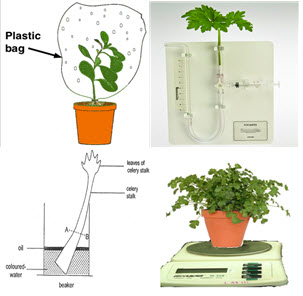
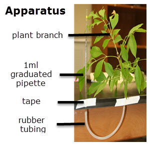

IB Docs (2) Team
IB Docs (2) Team

Experiments on Transpiration.

This circus of simple transpiration experiments will give students a good broad understanding of a range of practical methods which can be used to measure the rate of transpiration in plants. Students assemble apparatus, evaluate the uncertainties of their measurements and identify limitations of the experiments. This is followed by an analysis of data from the experiments. It is a good introduction to planning for the IA investigation.
Lesson Description
Guiding Questions
What makes a good experiment?
How can you estimate the uncertainty of any apparatus?
What would the units be of the "Rate of transpiration"
Activity 1: Experiment to model transpiration simply with few materials
Carry out the activities on the  Simple transpiration experiments worksheet.
Simple transpiration experiments worksheet.
Activity 2: Data analysis activity of a transpiration experiment
It would be a really good idea to analyse a real set of student data from an experiment in activity 2.
There is always a risk that these sort of experiments don't work first time so a set of sample data is provided here.
At each step of the experiment report below a model answer is given based on experimental data from the investigation method below.
It is accompanied by points of guidance for the Analysis and Evaluation of the IA Investigation.
The  Student worksheet for transpiration experiment report takes students through the steps outlined below in this web page
Student worksheet for transpiration experiment report takes students through the steps outlined below in this web page
Methods
From activity 1 students will all have designed a method and collected data.
To do
Write a short step by step method outlining the experiment used to collect your data.
Hypothesis / Research Question
As the humidity increase the rate of transpiration will decrease.

Outline MethodSet up the apparatus as shown.
Take a reading off the pipette at the start of the experiment
Record the position of the water in the pipette every six minutes for thirty minutes.
Repeat the experiment four more times spraying a fine mist of water onto the leaves, once in the first experiment, twice in the second experiment (every 15 minutes) three times in the third experiment (every 10 minutes) and five times in the fourth experiment every 6 minutes.
Table of results / data
To do
Present the data from your experiment in a neat table of results.
This is a sample set of results for the experiment outlined above
| Results of the experiment of the effect of humidity on transpiration | ||||||
| For all experiments.. | Mass of leaves = 1.1 g | Leaf Total Surface Area = 5.4 cm2 | ||||
| Time / minutes +/- 1 minute | 0 | 6 | 12 | 18 | 24 | 30 |
| Potometer readings no misting / ml +/- 0.01 ml | 0.53 | 0.55 | 0.57 | 0.59 | 0.61 | 0.63 |
| Potometer readings 1 misting / ml +/- 0.01 ml | 0.34 | 0.35 | 0.38 | 0.40 | 0.42 | 0.44 |
| Potometer readings 2 mistings / ml +/- 0.01 ml | 0.25 | 0.26 | 0.28 | 0.29 | 0.31 | 0.34 |
| Potometer readings 3 mistings / ml +/- 0.01 ml | 0.60 | 0.62 | 0.63 | 0.65 | 0.65 | 0.67 |
| Potometer readings 5 mistings / ml +/- 0.01 ml | 0.44 | 0.45 | 0.47 | 0.48 | 0.49 | 0.49 |
Footnote
The values of Time are given in whole minutes with an uncertainty of +/- one minute, because I was doing the five experiments all at the same time, and sometimes I was a little behind with the readings. with appropriate decimal places, and the uncertainty (although a bit big) is consistent with the values of time recorded.
The uncertainty for the potometer readings is +/- 0.01ml as this is half of the smallest pipette graduation which was 0.02ml.
.
Assessment criteria for Analysis
If you wish to see what sort of mark this table of results would achieve look at the IA Assessment criteria for Analysis and do your own assessment. For more information see the investigation page on transpiration.
This is a simplified version of the 2016 IB Assessment criteria for Analysis. The global descriptors have been separated into four columns for each of the main threads of the descriptors.
| ANALYSIS | ||||
| Raw data is | Data processing | Impact of uncertainties | Interpretation of processed data | |
| 6 | Sufficient. Could support a detailed and valid conclusion. | Appropriate and sufficient accuracy enables a conclusion to the RQ to be drawn that is fully consistent with data. | Full and appropriate consideration. | Correct valid and detailed conclusion. |
| 4 | Relevant but incomplete. Could support a simple or partially valid conclusion. | Appropriate and sufficient. Could lead to a broadly valid conclusion but significant inaccuracies and inconsistencies in the processing. | Some consideration. | Broadly valid limited conclusion. |
| 2 | Insufficient to support a valid conclusion. | Basic, inaccurate or too insufficient to lead to a valid conclusion | Little consideration. | Incorrect or insufficient invalid or very incomplete |
| 0 | Standard not reached. | Standard not reached. | Standard not reached. | Standard not reached. |
Data Processing
To decide what type of data processing needs doing it is important to first consider the key words in the assessment criteria. The data processing should be:
- Appropriate
- with sufficient accuracy
- to enable a conclusion to the research question.
Questions to answer
- What is the Independent variable from the research question (hypothesis)?
.............................................................................................................................................. - Does the first column of the results table show the values of the independent variable?
........................ - What is the dependent variable?
.............................................................................................................................................. - Are the results in the table showing both of these (dependent and independent) variables?
............................................................................................................................................. - Can you rewrite the research questions using the data from the results table?
............................................................................................................................................
Problem! The research question doesn't quite match the data collected in the experiment. The first decision to make is whether to solve this problem through repeating the experiment, data processing or by changing the research question.
Data processing seems like a better solution than changing the research question to, "Does the movement of the water in a potometer decrease when the plant is misted with a fine water spray?" or repeating the whole experiment.
Questions to answer
- What could be done to the potometer values to convert them to "rate of transpiration".
.............................................................................................................................................
.............................................................................................................................................. - What units would the rate of transpiration be measured in
........................ - Is it possible to change the number of mistings into humidity? If so how?
..............................................................................................................................................
It is a limitation of this experiment that values of humidity were not taken. We can assume that the more frequent mistings would lead to a higher humidity but it is not clear what sort of correlation, if any, there would be between the humidy and the misting treatments.
Graph
To calculate the rate of transpiration it is first important to find out if the rate of transpiration is constant. If it is the graph will have a straight line trend?
To do
- Plot a graph of the raw data to show if the increase in the potometer readings has a straight line.

- Calculate the dependent variable (in this case the rate of transpiration).
The rate = change in volume on pipette / time Units = ml / minute
As the lines on the graph all appear to show broadly speaking straight lines, it can be assumed that the rate is constant for the duration of each experiment and so the difference in volume from 0 minutes to 30 minutes can be calculated and divided by 30 minutes.
| Table showing calculated values of Rate of Transpiration | ||
| Misting frequency during the experiment | difference in volume / ml +/- 0.2 ml | rate of transpiration / ml per minute |
| 0 | 0.10 | 0.0033 |
| 1 | 0.10 | 0.0033 |
| 2 | 0.09 | 0.0030 |
| 3 | 0.07 | 0.0023 |
| 5 | 0.05 | 0.0017 |
- Plot a new graph of this calculated data, ideally showing the DV and IV from the research question.

Conclusion
Questions to answer
- What trend is shown in the graph?
.............................................................................................................................................
..............................................................................................................................................
.............................................................................................................................................
.............................................................................................................................................. - Using all the data collected describe how much variability there is within the data
.............................................................................................................................................
..............................................................................................................................................
.............................................................................................................................................
.............................................................................................................................................. - With the data available is there any statistical test which could be done that might support a conclusion? If so what is it?
.............................................................................................................................................
.............................................................................................................................................. - What is the impact of the variability and the statistical test on the strength of the conclusion?
.............................................................................................................................................
..............................................................................................................................................
.............................................................................................................................................
..............................................................................................................................................
Evaluation
Questions to answer
- How well does the trend identified in the conclusion support the research question?
.............................................................................................................................................
..............................................................................................................................................
.............................................................................................................................................
.............................................................................................................................................
.............................................................................................................................................
.............................................................................................................................................. - What limitations did the experiment have, in terms of methods and the data collected?
.............................................................................................................................................
..............................................................................................................................................
.............................................................................................................................................
..............................................................................................................................................
.............................................................................................................................................
............................................................................................................................................. - Suggest improvements for each of the limitations mentioned in the evaluation.
.............................................................................................................................................
.............................................................................................................................................
..............................................................................................................................................
.............................................................................................................................................
..............................................................................................................................................
.............................................................................................................................................
.............................................................................................................................................
Teachers notes
There are a number of aims in this lesson.
Firstly there is the prescribed experiment. "Skill: Measurement of transpiration rates using potometers. (Practical 7)" As well as doing the experiment the data processing is required to work out the rate of transpiration. This is well covered in this lesson.
A second aim is to give students a chance to evaluate different practical methods in preparation for the Exploration part of the IA Investigation. This is really only aimed to be an introduction and there is no guidance about the details needed in the method or the considerations of safety and risk which are also required.
A third aim is to give students some guidance on the presentation of their results in tables and graphs for the Analysis section in the investigation. There are some examples and some guiding questions for students to use in the completion of their work.
The last aim is to introduce some of the features of an Evaluation but again no further guidance is included.
There are some basic model answers for the questions on this separte page: Expt on transpiration - suggested answers You can control student access to these answers - by default they are not available in the student access.
Teachers using this experiment later in the course may wish to add their own guidance to the questions in the worksheets, especially if this is a final preparation before individual investigations.
Alternative experiments to measure the rate of transpiration
These are links to a few alternative experiments which could also form the basis of this activity.
A good model of a porous pot potometer (link to supplier)

 Twitter
Twitter
 Facebook
Facebook
 LinkedIn
LinkedIn